|
SoundBlock
|
Instructions to use
- Press SoundBlock's ON button.
- Connect its bluetooth to phone.
- Adjust the volume sent using the buttons on SoundBlock.
- Wear SoundBlock around your neck casually.
- When you get a call or want to speak/sing privately, put SoundBlock over your mouth.
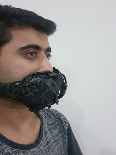
Instructions to make
- Download the software fusion360 from autodesk, and open the software.
- In the sculpt mode, select box. Specify the center point.
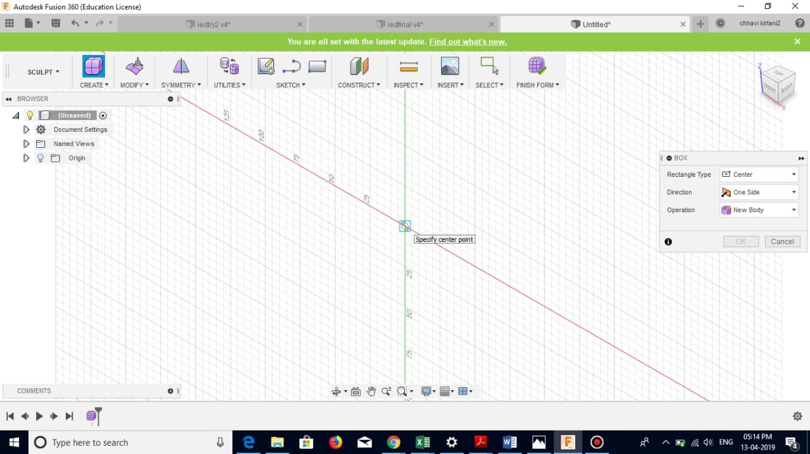
- Specify length and breadth of the box, 6 inches will cover a normal humans face length and 3 inches will cover properly the lips structure.
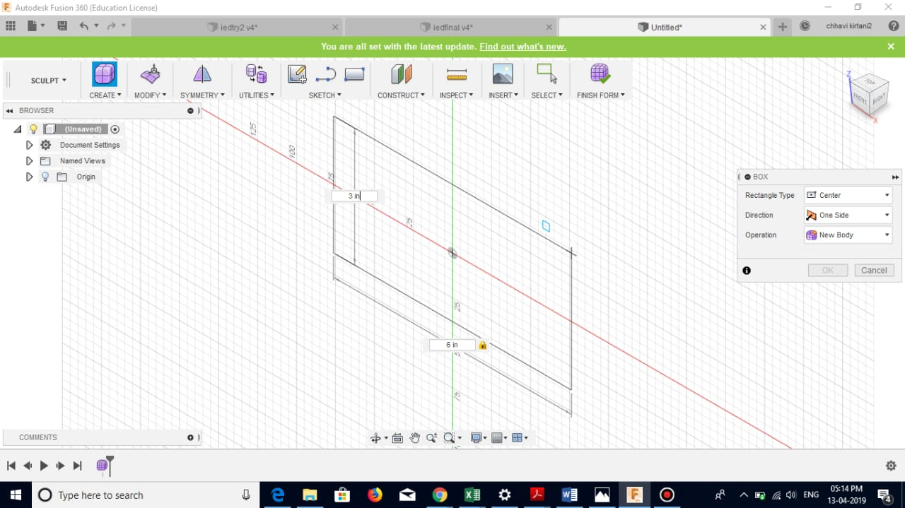
- Select the middle two edges and right click. Choose edit form.

- Move the arrows to bend the shape so that it fits the front part of the face.
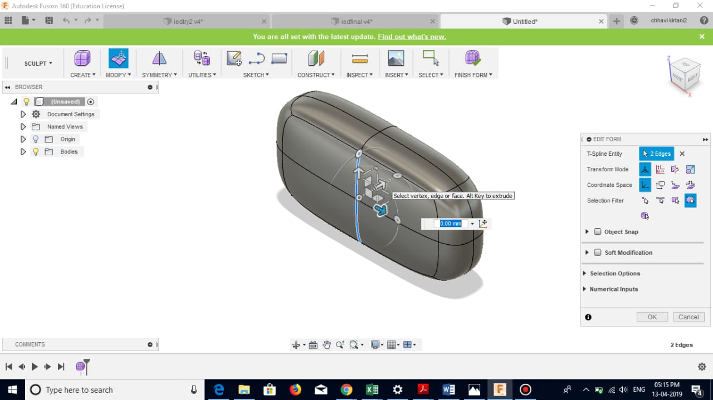
- Adjust the front part such that the width is around 0.5 inches.
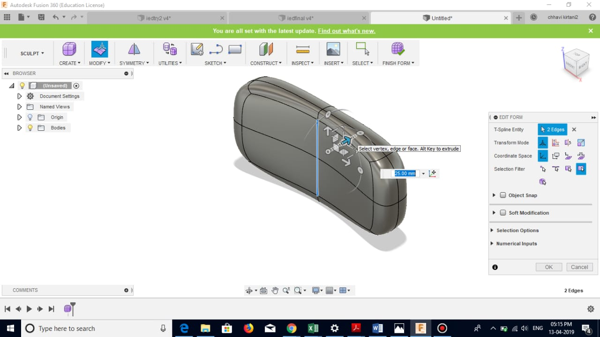
- As we need two symmetric parts for the face, select the design and choose mirror duplicate option.
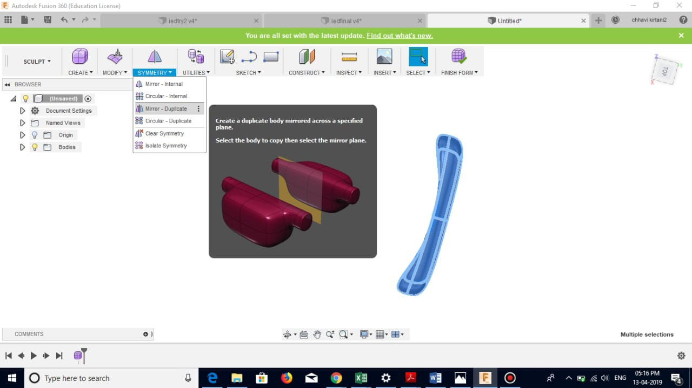
- Select the grey plane for creating duplicate.
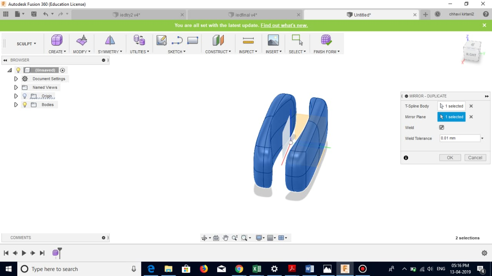
- Select the whole structure and right click to choose edit form.
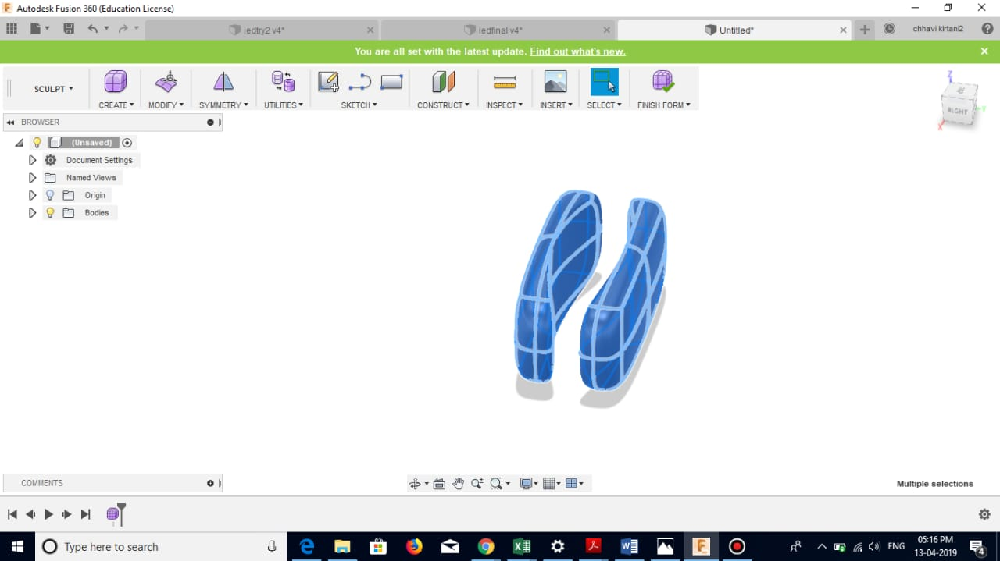
- Use the circular rotation option to rotate the two bodies and bring them together.
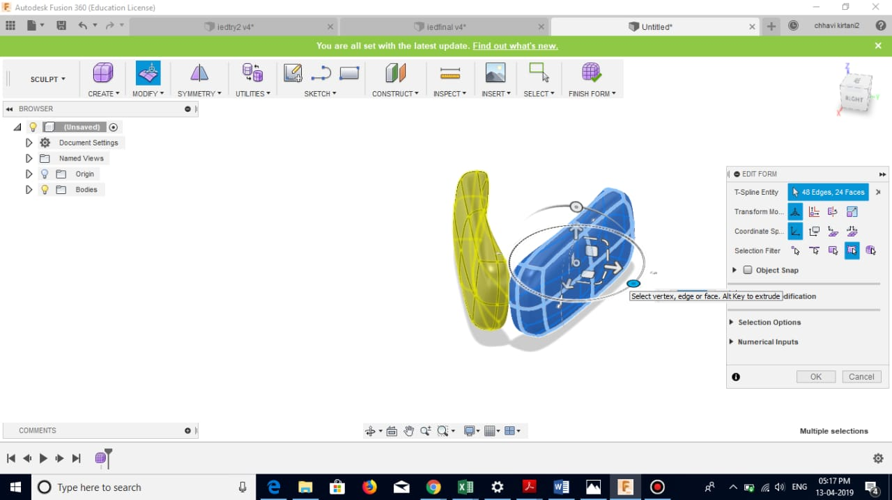
- Use the arrow option in edit form to maintain the distance between the two parts.
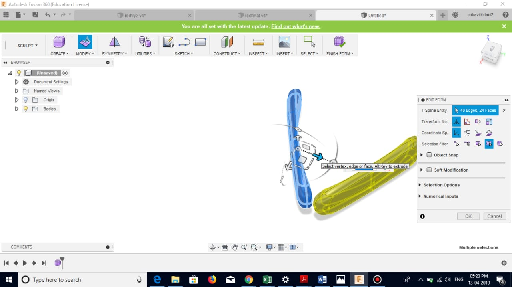
- Choose the arc option in "create" to draw a path which we will follow for the upper part.
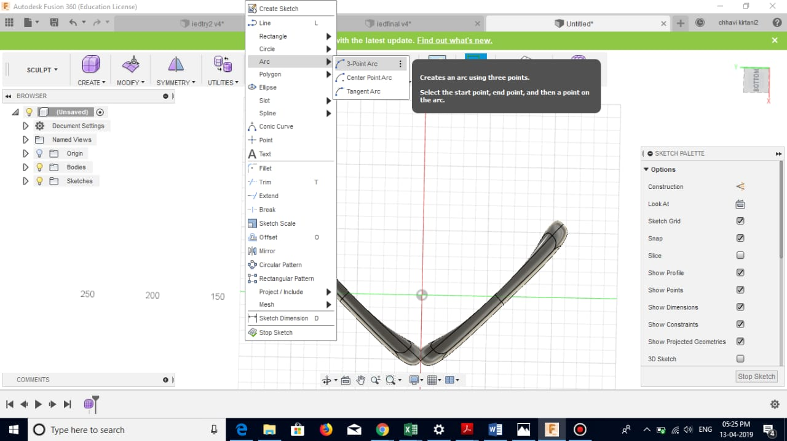
- Go to modify and choose bridge.
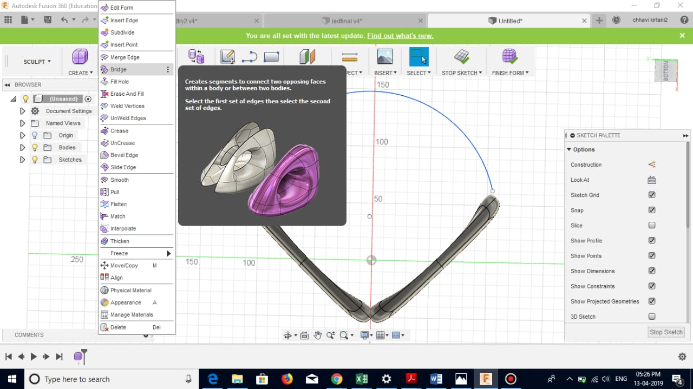
- Choose side one as shown.
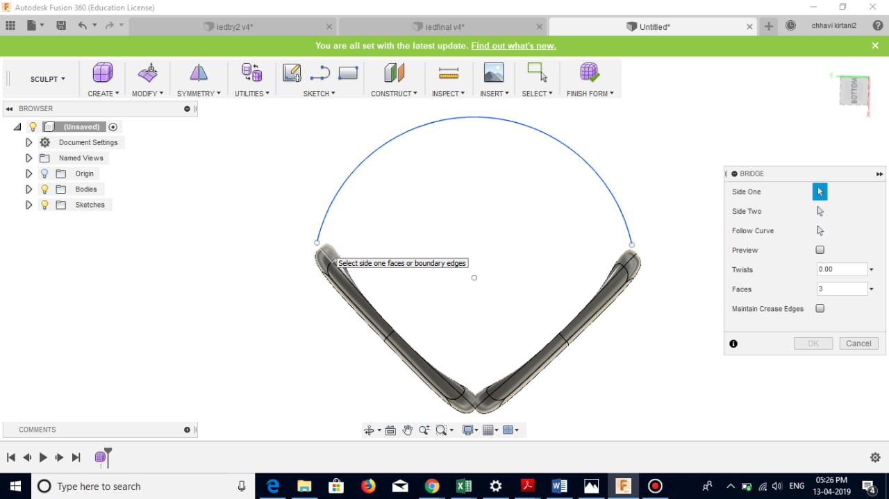
- Choose side two as shown
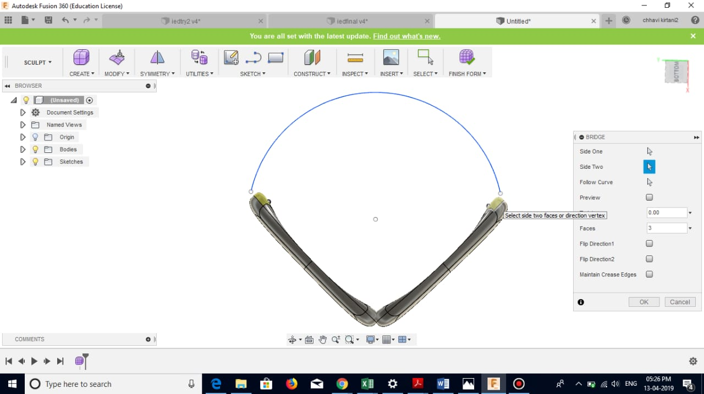
- Select the path to be followed as shown.
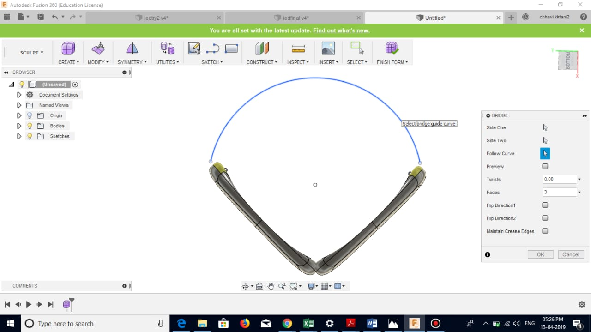
- Select the preview option to see a preview of how the bridge will be formed.
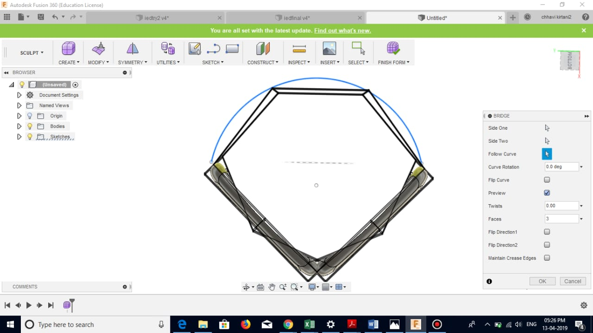
- Click ok. Your final design is ready.
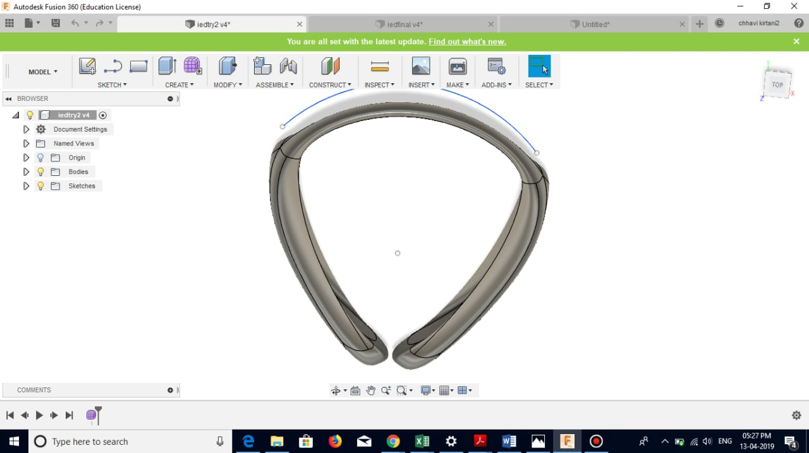
- Get this design 3D printed.
- Get acoustic foam and cut in the shape of the front part of SoundBlock.

- Paste it on SoundBlock.
- Attach a microphone to wireless bluetooth receiver.
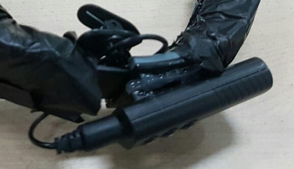
- Attach this bluetooth-microphone to the 3D printed design.
- SoundBlock is ready.